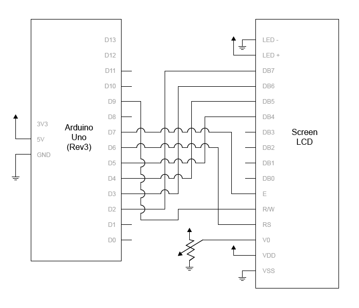
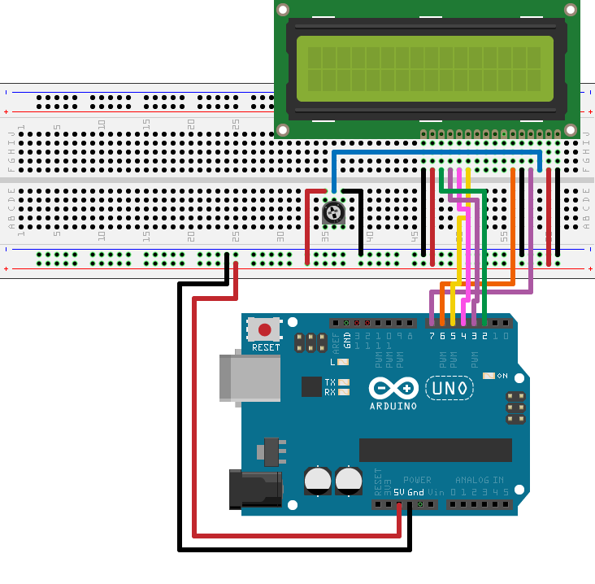
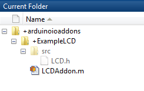

This example shows how to create an LCD add-on library and display "Hello World!" on an LCD. For more information on LCDs, see RGB Backlit LCDs.
This example shows you how to wire up an LCD display to your Arduino® Uno board. You need:
An Arduino Uno board
16x2 LCD similar to this device from Sparkfun.
10k potentiometer
Breadboard
Jumper cables
Files for this example are located in your Arduino support
package installation folder in \arduinoio\arduinoioexamples.
Connect the LCD as shown in the schematic:

Make sure that you wire your pins as follows:
| LCD Pin | Arduino Pin |
| 1 (VSS) | Ground |
| 2 (VDD) | 5V |
| 3 (V0) | Mid pin on potentiometer |
| 4 (RS) | D7 |
| 5 (R/W) | Ground |
| 6 (E) | D6 |
| 11 (DB4) | D5 (PWM) |
| 12 (DB5) | D4 |
| 13 (DB6) | D3 (PWM) |
| 14 (DB7) | D2 |
| 15 (LED+) | 5 V |
| 16 (LED-) | Ground |
When done, your setup looks similar to this:

For this example, create a header file named LCDAddon.h and
save it in the +arduinoioaddons/+ExampleLCD/src folder.
This file wraps all the methods in the library.
You can find the library files for this example in your Arduino support
package installation folder in \arduinoio\arduinoioexamples.
Include LibraryBase.h and the third-party
header fileLiquidCrystal.h.
#include "LibraryBase.h" #include "LiquidCrystal.h"
Declare debug strings using const char.
Use PROGMEM to store the debug strings to the device
flash memory, to save SRAM.
const char MSG_pLCD_CREATE_LCD_SHIELD[] PROGMEM = "Arduino::pLCD = new LiquidCrystal(%d, %d, %d, %d, %d, %d);\n"; const char MSG_pLCD_INITIALIZE_LCD_SHIELD[] PROGMEM = "Arduino::pLCD->begin(%d, %d);\n"; const char MSG_pLCD_CLEAR_LCD_SHIELD[] PROGMEM = "Arduino::pLCD->clear();\n"; const char MSG_pLCD_PRINT[] PROGMEM = "Arduino::pLCD->print(%s);\n"; const char MSG_SET_CURSOR_LCD_SHIELD[] PROGMEM = "Arduino::pLCD->setCursor(%d, %d);\n"; const char MSG_pLCD_DELETE_LCD_SHIELD[] PROGMEM = "Arduino::delete pLCD;\n";
Define command IDs to match those defined in your MATLAB® class.
#define LCD_CREATE 0x00 #define LCD_INITIALIZE 0x01 #define LCD_CLEAR 0x02 #define LCD_PRINT 0x03 #define LCD_DELETE 0x04
Create the constructor that defines the library name. Declare the debug strings and register the library to the server.
class LCD : public LibraryBase
{
public:
LiquidCrystal *pLCD;
public:
LCD(MWArduinoClass& a)
{
libName = "ExampleShield/LCD";
a.registerLibrary(this);
}Override the setup method to reset the
cursor to the first row upon initialization.
void setup()
{
cursorRow = 0;
}
Override commandHandler, and map each
command to its corresponding methods. For this example, map the commands:
| Case | Command | Description |
|---|---|---|
| 0x00 | LCD_CREATE | Define pins used by the LCD |
| 0x01 | LCD_INITIALIZE | Set up columns and rows |
| 0x02 | LCD_CLEAR | Clear the LCD screen |
| 0x03 | LCD_PRINT | Print the message on the LCD |
| 0x04 | LCD_DELETE | Delete the LCD object |
Create an LCD object. Initialize the LCD and assign rows
and columns of the inputs. Use debugPrint to print
trace messages to the MATLAB command line to help you debug code
running on the Arduino device.
To understand more about command handlers see Command Handler.
public:
void commandHandler(byte cmdID, byte* dataIn, unsigned int payloadSize)
{
switch(cmdID)
{
case LCD_CREATE: //createLCD
{
byte* pinNumbers = new byte [6];
for (byte i=0; i<6; i=i+1)
{
pinNumbers[i] = dataIn[i];
}
createLCDObject(pinNumbers[0],pinNumbers[1],pinNumbers[2],pinNumbers[3],pinNumbers[4],pinNumbers[5]);
sendResponseMsg(cmdID, 0, 0);
break;
}
case LCD_INITIALIZE: //initializeLCD
{
unsigned int rows = dataIn[0];
unsigned int cols = dataIn[1];
initializeLCD(rows,cols);
clearLCD();
sendResponseMsg(cmdID, 0, 0);
break;
} Clear the LCD screen.
case LCD_CLEAR: //clearLCD
{
clearLCD();
cursorRow = 0;
setCursor(0, cursorRow);
sendResponseMsg(cmdID, 0, 0);
break;
} Create a command that takes an input and prints it on the LCD screen.
case LCD_PRINT: //printLCD
{
byte* val = {dataIn};
// last byte is the number of rows initialized
// last 2nd byte is the number of columns initialized
char message[payloadSize-1];
for(byte k=0; k<(payloadSize-2); k=k+1)
{
message[k]=val[k];
}
message[payloadSize-2] = '\0';
byte cols = val[payloadSize-2];
byte rows = val[payloadSize-1];
if(cursorRow+1 > rows){
cursorRow = 0;
clearLCD();
}
setCursor(0,cursorRow);
printLCD(message);
cursorRow++;
sendResponseMsg(cmdID, 0, 0);
break;
} Delete the LCD object.
case LCD_DELETE: //delete
{
deleteLCDobject();
//reset the cursor position to the first row on deletion
cursorRow = 0;
sendResponseMsg(cmdID, 0, 0);
break;
}
Wrap the LiquidCrystal methods to add
debug messages.
public:
void createLCDObject(unsigned int rs,unsigned int enable,unsigned int d0,unsigned int d1,unsigned int d2,unsigned int d3)
{
pLCD = new LiquidCrystal(rs, enable, d0, d1, d2, d3);
debugPrint(MSG_pLCD_CREATE_LCD_SHIELD,rs,enable,d0,d1,d2,d3);
}
void initializeLCD(unsigned int cols,unsigned int rows)
{
pLCD->begin(cols, rows);
debugPrint(MSG_pLCD_INITIALIZE_LCD_SHIELD, cols, rows);
}
void clearLCD()
{
pLCD->clear();
debugPrint(MSG_pLCD_CLEAR_LCD_SHIELD);
}
void printLCD(char message[])
{
pLCD->print(message);
debugPrint(MSG_pLCD_PRINT, message);
}
void setCursor(byte column, byte row)
{
pLCD->setCursor(column, row);
debugPrint(MSG_SET_CURSOR_LCD_SHIELD,column,row);
}
void deleteLCDobject()
{
delete pLCD;
debugPrint(MSG_pLCD_DELETE_LCD_SHIELD);
}
};This example shows how to create LCDAddon.m MATLAB wrapper
class file and save it in the C:\Work\+arduinoioaddons\+ExampleLCD folder.
You can find library files for this example in your Arduino support
package installation folder in \arduinoio\arduinoioexamples.
Create MATLAB class, LCDAddon,
that inherits from arduinoio.LibraryBase.
classdef LCDAddon < arduinoio.LibraryBase Define custom command IDs for all public methods of the LCD class sent to the server on the board.
properties(Access = private, Constant = true)
LCD_CREATE = hex2dec('00')
LCD_INITIALIZE = hex2dec('01')
LCD_CLEAR = hex2dec('02')
LCD_PRINT = hex2dec('03')
LCD_DELETE = hex2dec('04')
end Override constant properties in the class to include necessary header and third-party source files.
properties(Access = protected, Constant = true)
LibraryName = 'ExampleLCD/LCDAddon'
DependentLibraries = {}
SourceHeaderFile = 'LiquidCrystal/LiquidCrystal.h'
CppClassHeaderFile = fullfile(arduinoio.FilePath(mfilename('fullpath')), 'src', 'LCD.h')
CppClassName = 'LCD'
end
DependentLibraries must contain
all other libraries you need to use your custom library.
SourceHeaderFile must be a string,
starting with the library name, followed by a slash (/),
and then header file name. If you need multiple header files, specify
a cell array of strings.
CppClassHeaderFile must be the LCD.h with
the full path. Replace LCD.h with your custom file
name after you create it, and save it to the src folder
in the ExampleLCD folder.
CppClassName must be the exact
class name defined in LCD.h.
Specify command IDs supported by the add-on for each method
you create. Specify the pins that connect to the LCD, and define an
error if the resource count is more than 0. In
this example, you can add only one LCD, and therefore it is imperative
that you manage your pin resource count.
methods(Hidden, Access = public)
function obj = LCD(parentObj,inputPins)
obj.Parent = parentObj;
obj.Pins = inputPins;
count = getResourceCount(obj.Parent,obj.ResourceOwner);
% Since this example allows implementation of only 1 LCD
% shield, error out if resource count is more than 0
if count > 0
error('You can only have 1 LCD shield');
end
incrementResourceCount(obj.Parent,obj.ResourceOwner);
createLCD(obj,inputPins);
endDevices such as the Arduino Uno have a limited number of
pins and require you to manage the resource allocation. Therefore,
you are limited to creating only one LCD object at a time. For more
information, see getResourceOwner.
Write a createLCD method to perform
the following functions:
Reserve the pins on the Arduino connected to the LCD and used by the library. Reserving prevents other functions from using these pins, giving your library exclusive use of the pins.
Send commands, including pin data, to the server using sendCommand.
function createLCD(obj,inputPins) try cmdID = obj.LCD_CREATE; for iLoop = inputPins configurePinResource(obj.Parent,iLoop{:},obj.ResourceOwner,'Reserved'); end terminals = getTerminalsFromPins(obj.Parent,inputPins); sendCommand(obj, obj.LibraryName, cmdID, terminals); catch e throwAsCaller(e); end end end
Overload destructor delete method for
LCD class to free up the reserved pins and decrement LCD resource
count.
methods(Access = protected)
function delete(obj)
try
parentObj = obj.Parent;
for iLoop = obj.Pins
configurePinResource(parentObj,iLoop{:},obj.ResourceOwner,'Unset');
end
decrementResourceCount(parentObj, obj.ResourceOwner);
cmdID = obj.LCD_DELETE;
inputs = [];
sendCommand(obj, obj.LibraryName, cmdID, inputs);
catch
end
end
endNote: Do not throw errors when you destroy the object. |
Initialize the LCD with specific number of columns and rows, and clear the LCD screen.
methods(Access = public)
function initializeLCD(obj,varargin)
p = inputParser;
p.PartialMatching = true;
addParameter(p, 'Rows', 2);
addParameter(p, 'Columns', 16);
parse(p, varargin{:});
output = p.Results;
obj.Rows = output.Rows;
obj.Columns = output.Columns;
inputs = [output.Columns output.Rows];
cmdID = obj.LCD_INITIALIZE;
sendCommand(obj, obj.LibraryName, cmdID, inputs);
end
Clear the LCD.
function clearLCD(obj) cmdID = obj.LCD_CLEAR; inputs = []; sendCommand(obj, obj.LibraryName, cmdID, inputs); end
Print the message on the LCD. This example uses a 16x2 LCD screen and cannot print more than 16 characters.
function printLCD(obj,message) cmdID = obj.LCD_PRINT; if numel(message) > 16 error('Cannot print more than 16 characters') end inputs = [double(message) obj.Columns obj.Rows]; sendCommand(obj, obj.LibraryName, cmdID, inputs); end end end
Use the header files you have created to register the custom library and run the example.
You can find files for this example in your Arduino support
package installation folder in \arduinoio\arduinoioexamples.
Add the location of the template to the MATLAB path. For example:
addpath ('C:\Work');
Make sure the ExampleLCD/LCDAddon library
is available.
listArduinoLibraries
ans =
'Adafruit/MotorShieldV2'
'ExampleLCD/LCDAddon'
'I2C'
'SPI'
'Servo'Tip: If you do not see your add-on library in the list, see Custom Arduino Library Issues for more information. |
Create an arduino object specifying
the ExampleLCD/LCDAddon library.
a = arduino('com3','uno','libraries','ExampleLCD/LCDAddon');
a =
arduino with properties:
Port: 'COM5'
Board: 'Uno'
AvailablePins: {'D2-D13', 'A0-A5'}
Libraries: {'ExampleLCD/LCDAddon'}Create the LCD object, and specify the pins you configured on the Arduino device.
lcd = addon(a,'ExampleLCD/LCDAddon',{'D7','D6','D5','D4','D3','D2'});
Initialize the LCD.
initializeLCD(lcd);
Print a string to the LCD.
printLCD(lcd,'Hello World!');If you do not see a display on your LCD, try turning the knob on your potentiometer to adjust the contrast.
Clear the LCD.
clearLCD(lcd);